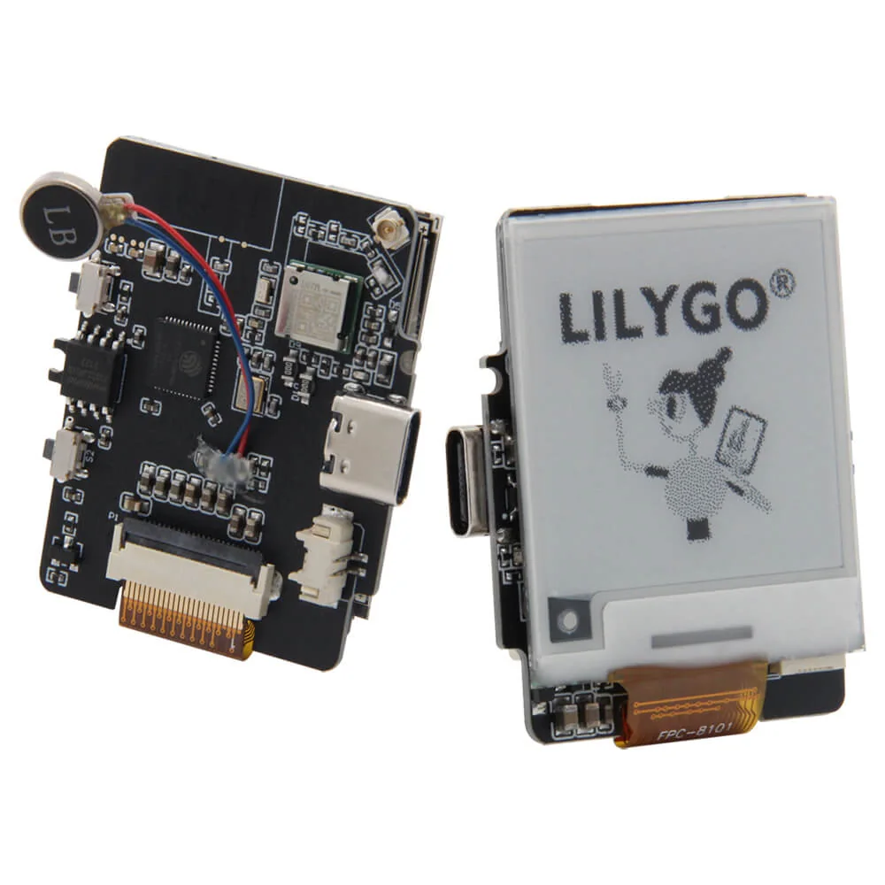

T-Wrist E-paper 1.54 Inch Display
LilyGO
T-Wrist E-paper 1.54 Inch Display is an 1.54" 200x200 ESP32 display board by LilyGO based on the ESP32 with 4MB flash.
Features, ports & interfaces
- 4 MB flash
- Wi-Fi 4 (802.11 b/g/n, 2.4 GHz) – version from the ESP32 datasheet
Specifications
| Parameter | Value | Source |
|---|---|---|
| Screen size | 1.54" | source |
| Resolution | 200x200 | source |
| MCU / SoC | ESP32 | source |
| MCU family | ESP32 | source |
| Flash | 4MB | source |
| Wi-Fi | Wi-fi , Bluetooth V4.2 | source |
| Category | LilyGO (T-series) | |
| Vendor | LilyGO |
Official links & documentation
Notes
- Auto-added by the monthly scraper on 2026-11-24 from the official product page; values are copied verbatim from that page, fields it does not state are empty. Not yet hand-reviewed.